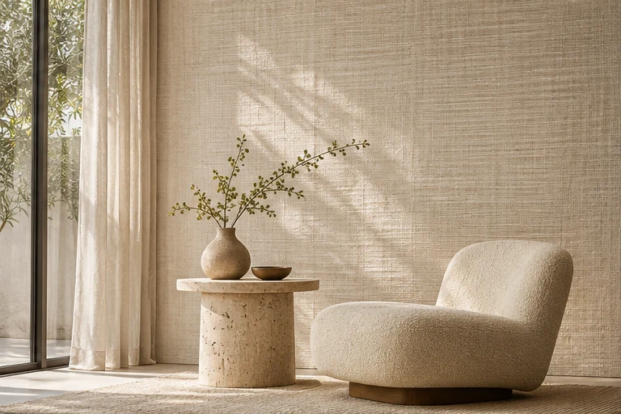

Архитектурный текстиль для вашего интерьера
Представьте фактуру, цвет и рисунок в своём пространстве. Выберите визуальное направление — и покажите специалисту, что вам близко.
Подобрать оформление Стены и потолкиИндивидуальный запрос
От понравившейся отделки — к понятному запросу
Вместо абстрактного «хочу что-то похожее» вы выбираете визуальный пример. Он остаётся в форме вместе с параметрами помещения и попадает в предпросмотр заявки.
Посмотреть состав заявкиВыберите направление
Фактура, рисунок, печать и свет помогают представить текстильную поверхность в вашем интерьере.
Уже есть идея для своего пространства?
Точные замеры не нужны. Достаточно выбрать пример и описать помещение так, как вы его представляете.
Составить запросЗапросить индивидуальный расчёт
Укажите параметры помещения и при желании приложите фото или план. На следующем шаге можно проверить состав заявки.